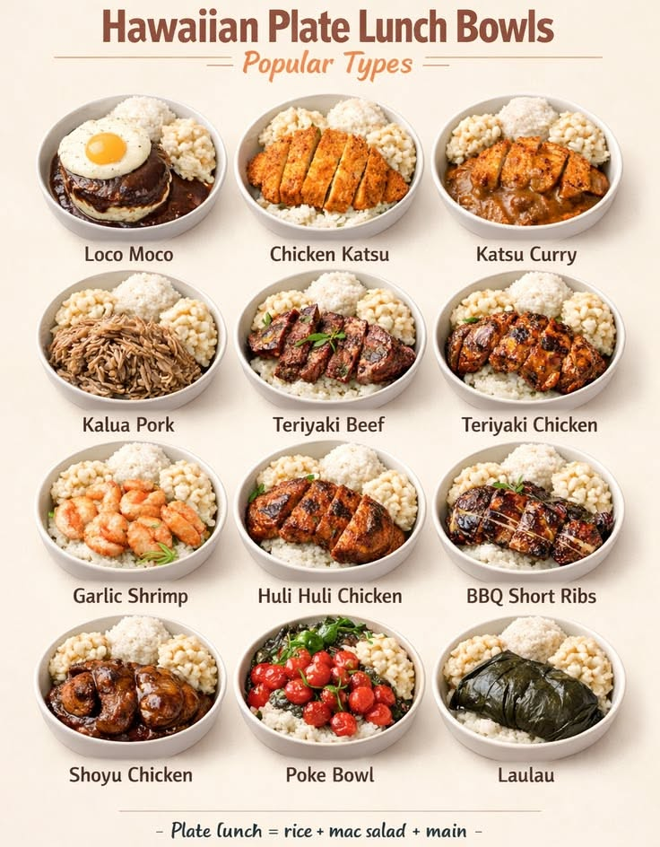
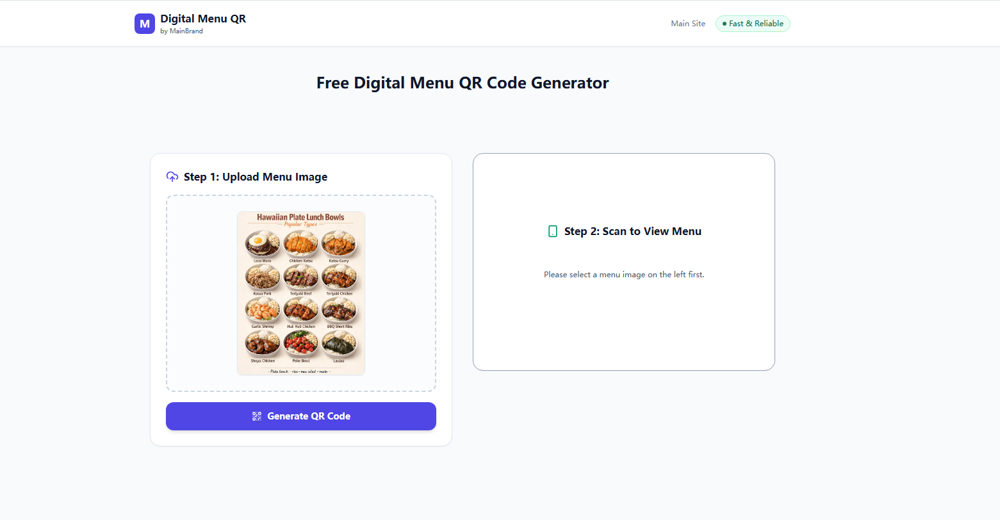
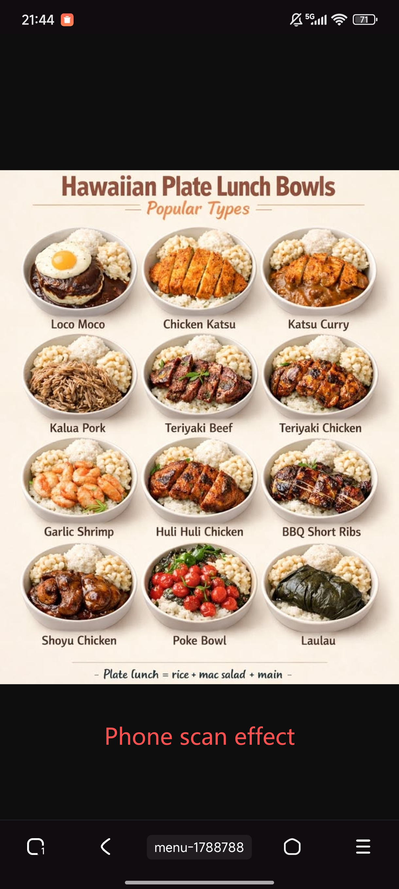

Convert Menu Image to QR Code Free: A Simple Privacy-First Guide for Restaurants
MatrixQR Image Menu Generator is a privacy-first, client-side web application designed to help restaurants, cafes, and food trucks convert menu image URLs to QR codes for free without requiring accounts, recurring subscriptions, or server-side tracking.
Paying for a complex monthly SaaS menu management platform is often an unnecessary overhead. If you already have your menu designed as a JPG, PNG, or digital poster, you can instantly generate a high-resolution, contactless QR code that customers scan directly from their mobile browser.
Why Use Image-Based QR Menus?
If your restaurant updates its offerings seasonally or uses custom-printed graphics, converting an image link directly into a QR code offers distinct operational advantages:
- Preserve Your Original Design: Keep your designer's typography, layout, and photos intact without manually re-entering dish names and prices into a third-party CMS.
- Instant, App-Free Access: Diners simply scan the tabletop QR code to view high-resolution menu images instantly in Safari or Chrome without downloading apps.
- 100% Privacy & Browser-Side Processing: Utilizing modern browser technology like the HTML5 Canvas API, code rendering is executed strictly on the client side. No menu data or customer scan logs are stored on remote servers.
- Permanent & Subscription-Free: Unlike commercial QR SaaS platforms that lock your codes behind $30/month paywalls after a trial, static codes generated with MatrixQR never expire.
MatrixQR vs. Traditional Online QR Generators
| Feature | MatrixQR (menu.matrixqr.cc) | Commercial QR SaaS Platforms |
|---|---|---|
| Data Security | 100% Local Client-Side Processing | Stores URL & scan logs on cloud servers |
| Cost Structure | 100% Free Forever | Monthly subscriptions ($15–$50/mo) |
| Validity | Never Expires | Expires when free trial ends |
| Output Quality | High-Res Watermark-Free PNG | Low-resolution unless upgraded |
How to Convert Your Menu Image to a QR Code in 3 Steps
Follow this simple step-by-step tutorial to create a print-ready QR code for your physical restaurant tables:
Step 1: Host and Prepare Your Menu Image
Ensure your menu photo or poster is uploaded to a public web server, Google Drive (public link), or image hosting service.

Step 2: Generate the QR Code Locally
Visit menu.matrixqr.cc. Paste your menu image link into the Matrix Core input box and click execute to render your code instantly in your browser.

Step 3: Export and Print High-Resolution Graphics
Download the clean PNG output. In our field testing, a 300 DPI export rendered clearly on tabletop cards as small as 3x3 cm under standard restaurant lighting.

After generating your code, enhance your branding with our guide on creating a restaurant menu with logo. If you are comparing code types, learn more in our detailed breakdown of static vs dynamic QR codes and the pros and cons of static QR codes.
Always host your menu image on a static URL path (e.g., yourrestaurant.com/menu.jpg). When changing seasonal dishes or prices, simply overwrite the image file on your server. Your printed tabletop QR codes will continuously serve the updated menu without re-printing fees!
Frequently Asked Questions (FAQ)
Conclusion
Providing a seamless digital dining experience does not require expensive software subscriptions. By utilizing a free, private image to QR code menu generator like MatrixQR, restaurant owners can create permanent, scannable menu displays in seconds.
Read Guide: Is a static QR code enough for your restaurant menu? →